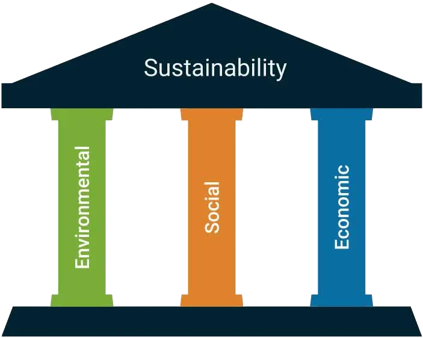

A Case for Assaya Aiftiradia
Nakba

Eawda
Assaya Aiftiradia (Virtual Stick)

Systemic Theft (AKA Empire)
The weak win by not losing, the strong lose by not winning (Record, 2005)


Create Sustainably

Resist

References
Abdo, N. (2014). Captive Revolution: Palestinian Women’s Anti-Colonial Struggle within the Israeli Prison System. Pluto Press.
Abdo, N. (2024). Israel’s settler colonialism and the genocide in Gaza: Alternatives. Studies in Political Economy / Recherches En Économie Politique, 105(1), 94–106. https://doi.org/10.1080/07078552.2024.2325298
Cote, A. C., & Harris, B. C. (2023). The cruel optimism of “good crunch”: How game industry discourses perpetuate unsustainable labor practices. New Media & Society, 25(3), 609–627. https://doi.org/10.1177/14614448211014213
Cristiano, F., & Distretti, E. (2017). Along the Lines of the Occupation. Conflict and Society, 3(1), 130–143. https://doi.org/10.3167/arcs.2017.030111
Cruz, S. (2012). MECHANIZING EXPLORATORY GAME DESIGN.
Elmer, J. (2025, February 1). Jon Elmer ((jonelmer?)) / X. X (Formerly Twitter). https://x.com/jonelmer
Fanon, F., Farrington, C., & Fanon, F. (2002). The wretched of the earth. Grove Press.
Israel Defense Forces (Director). (2024, October 17). Raw footage of Yahya Sinwar’s last moments: [Video recording]. https://www.youtube.com/watch?v=YqkSaMuuzzY
mineman65 & Reed. (2007, February 4). Pair of F-16 Fighting Falcons launch flares. A Military Photo & Video Website. https://www.militaryimages.net/media/pair-of-f-16-fighting-falcons-launch-flares.19813/
Moses, A. D. (Ed.). (2022). Empire, Colony, Genocide: Conquest, Occupation, and Subaltern Resistance in World History. Berghahn Books. https://doi.org/10.1515/9781782382140
Oxford, D. (2025). What is ‘Dreams on a Pillow’, the Palestinian game about the Nakba? Al Jazeera. https://www.aljazeera.com/news/2025/1/18/what-is-dreams-on-a-pillow-the-palestinian-game-about-the-nakba
Rashed, H., Short, D., & Docker, J. (2014). Nakba Memoricide: Genocide Studies and the Zionist/Israeli Genocide of Palestine. Holy Land Studies: A Multidisciplinary Journal (Edinburgh University Press), 13(1), 1–23. https://doi.org/10.3366/hls.2014.0076
Record, J. (2005). Why the Strong Lose. The US Army War College Quarterly: Parameters, 35(4). https://doi.org/10.55540/0031-1723.2281
Said, E. W. (1994). Culture and imperialism (1st Vintage Books ed). Vintage Books.
Shurafa, W., Kareem, A. H., & Magdy, S. (2025, January 27). Palestinians celebrate their return to northern Gaza after 15 months of war. AP News. https://apnews.com/article/israel-palestinians-hamas-war-news-ceasefire-hostages-01-27-2025-48a7eb98d6900cdf24b32ea93b5bc584
Soliman, G. F. S. (2024). Yahya Sinwar as a posthumous social media legend? https://dr.ntu.edu.sg/handle/10356/181437
Souri, H. T. (2007). The Political Battlefield of Pro-Arab Video Games on Palestinian Screens. Comparative Studies of South Asia, Africa and the Middle East, 27(3), 536–551. https://doi.org/10.1215/1089201x-2007-031
TEDx Talks (Director). (2015, November 16). Stories make us | Refaat Alareer | TEDxShujaiya [Video recording]. https://www.youtube.com/watch?v=YsbEjldJjOw
Watson, A. (2019, November 25). The Core Concept of Sustainability. Medium. https://medium.com/openforests/the-core-concept-of-sustainability-8facc0811f4f
Xu, C. (2024). The Gates of the Great Continent: Palestine, China, and the War for Humanity’s Future. Qiao Collective. https://www.qiaocollective.com/articles/palestine-china
Zureik, E. (1983). The economics of dispossession: The Palestinians. Third World Quarterly. https://doi.org/10.1080/01436598308419731